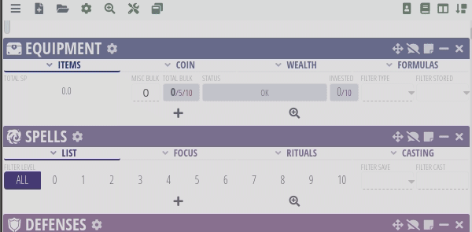

If you don't know whats "Pathfinder 2E" is or if you didn't play tabletop role-playing game before check out quick summary of rules from Archives of Nethys. Especially Getting Started in How to Play section.
Almost all decribed options can be found in Archives of Nethys. If something is differ from original rules and setting I would specify it here.
Players can select any valid Common option. Uncommon, Rare and Unique options can be selected after consulting with GM.
Character Creation
Step 1. Create a Concept
This includes such options as Ancestry, Class, Background. It doesn't have to be exact mechanical options. Just vague copcept of what you hero will be.
Create a name for you character (Please use guidlines and consult with GM).
In this setting rarity of Ancestries and Classes are differs from original rules:
Ancestries
Common Ancestries
Dwarf
Gnome
Halfling
Half-human (Half-Elf/Half-Orc)
Human
Lizardfolk
Ratfolk
Uncommon Ancestries
Elf
Fetchling
Goblin
Hobgoblin
Kobold
Leshy
Ork
Aasimar (Versatile Heritage)
Changeling (Versatile Heritage)
Ganzi (Versatile Heritage)
Sylph (Versatile Heritage)
Tiefling (Versatile Heritage)
Versatile Heritage means that this option placed on top of regular Ancestry.
Class almost always have suboption (like Research Fields for Alchemist or Arcane Schools and Arcane Thesis for wizard). Consider what would you like for your hero. (This options can be found in submenu on selected Class page).
All General Backgrounds are common. Legacy and Regional backgrounds should be discussed with GM.
Step 5. Abilities
At first level every hero recieves 4 free ability boosts in addition to ancestry, class and background boosts.
You class page has Class Features table. Read features for first level and select required options if it has variants.
If options are match you can select any other variant. For example your class and you background provides trained proficiency in same skill that means you gain trained in that skill and any other skill you choose.
Step 6. Equipment
New Hero starts with 15 gp. You can save time by buying kit for you class: Class Kits. Or you can buy all equipment yourself: Equipment
Equipment info
Armor, shields, and weapons have all of the mundane armaments needed for combat, as well as ones made of precious materials or that possess special magical abilities.
Other nonmagical gear can be found under the adventuring gear category.
Alchemical items are powered by the reactions of alchemical reagents. Almost all alchemical items are consumable items that are used up when you activate them and this category includes bombs, elixirs, poisons, and other alchemical tools.
Consumables are used up when you activate them, and include ammunition, oils, potions, scrolls, and talismans, among others. Categories of items that are consumables but have specific rules, such as alchemical items, are presented separately.
Held Items include a wide variety of items you use with your hands but doesn't include more narrow categories of held items, such as weapons.
Materials can be used to make items with unique properties and other advantages.
Runes modify armor and weapons when etched onto them. This section includes fundamental runes for weapons (weapon potency and striking) and armor (armor potency and resilient).
Snares are single-use traps typically made by rangers.
Staves provide flexible spellcasting options.
Structures include buildings, tents, and other larger items.
Wands hold a spell of the crafter's choice, and can be used to repeatedly cast that spell.
Worn Items consist of a vast collection of clothing and other items you wear on your body.
Step 7. The rest
Calculations of modifies and stats from all options selected. If you use character.pf2.tools it is done automatically.
Creating caracter using character.pf2.tools
Step 1. Concept
Lets's create Merlin character. That makes him humanwizard with already established name.
Merlin's traditional biography casts him as a cambion, a being born of a mortal woman, sired by an incubus. That makes him tiefling. Merlin matures to an ascendant sagehood and engineers the birth of Arthur through magic and intrigue. Some king of scholar character.
Step 2. Ancestry
Merlin is Human. Which gives him 8 hp, medium size, 25 feet land speed, 2 free ability boosts, Common + 1 + your Intelligence modifier additional languages.
His Human Heritage will be Tiefling Versatile Heritage. Which gives him low-light vision. And ability to choose tiefling ancestry feats.
For his ancestry feat we'll choose Devil's Advocate.
Step 3. Class
We established that Merlin is Wizard. Often called enchanter.
Wizard's Key Ability: INTELLIGENCE. And wizard gets 6 plus your Constitution modifier hit points per level.
Wizard gets two subclass options. Arcane School would be Enchantment (since he's called enchanter). His Arcane Thesis would be Metamagical Experimentation.
Step 4. Background
Merlin's background would be Scholar. Which gives Int or Wis and free ability boost. Trained proficiency in Arcana, Nature, Occultism, or Religion skill, and the Academia Lore skill. And Assurance skill feat.
Step 5. Abilities
4 free abilities:
Wizard's class features are:
ancestry and background: already done
initial proficiencies: trained in
Perception
Fortitude
Reflex
Expert in Will
Arcana (already trained from background, so changed to Occultism)
number of additional skills equal to 2 plus your Intelligence modifier (which is 2+4)
club, crossbow, dagger, heavy crossbow, and staff
unarmed attacks
unarmored defense
arcane spell attacks and arcane spell DCs
arcane spellcasting: giving 5 cantrips slots and 2 1st level spells per day. And spellbook with 10 cantrips and 5 1st-level spells. We will use Sample Spellbook.

arcane school gives us +1 enchantment spell (charm) to the book and charming words focus spell.
Wizard Kit comes with staff, adventurer's pack, material component pouch, writing set and optional crossbow with 20 bolts. We'll take all of it which lefts us with 8 gp 8 sp.
Step 7. The rest
All bonuses are automatically calculated. But Merlin doesn't have any attacks displayed. We'll add staff and crossbow that are already bought:
Extra Step. Character setup
I'm using Expanded Rules in this setting. So some options should be enabled in character.pf2.tools when character created:
Proficiency without Level: use no level in bonuses.
Automatic Bonus Progression: create in CHARACTER \ ADJUSTMENTS "AUTOMATIC BONUS PROGRESSION" and paste there

{kind=link}
{kind=link}


{kind=link}


{kind=link}
{kind=link}

Ancestries
Common Ancestries
Uncommon Ancestries
Versatile Heritage means that this option placed on top of regular Ancestry.
Rare and unique Ancestries